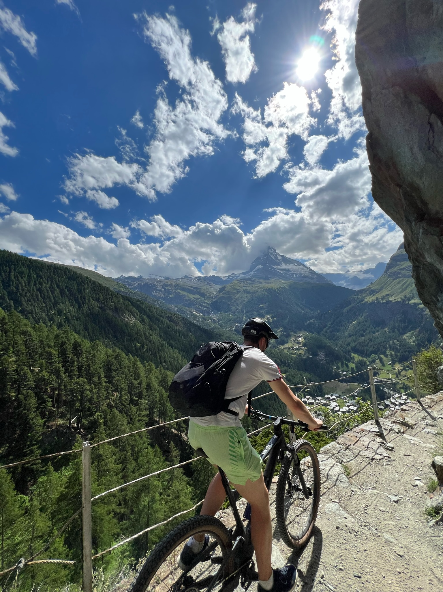

Where I've been
I grew up in the New York metro area in a business-oriented family. I realized my passion for the sciences at young age by asking endless questions about the world around us. That curiosity has stuck, and ultimately led me to study a combined Chemical Engineering and Biochemistry degree at Northeastern University
The undergraduate program at Northeastern challenged me to grow as both an individual and an engineer. I am sincerely grateful for all 156 credit hours spent in the classroom and nearly 2 years of co-op. The combination of work and study gave me immediate opportunities to apply classwork at interesting companies across the United States. After graduating in 2024, I am exceedingly confident this educational path was the right choice for me. I then took a leap of faith and relocated to Huntsville, Alabama for my next position.


Where I'm going
I am looking for the next challenging role in my early career. I am comfortable in both manufacturing and research environments. I recognize that teams of every scale, from multinationals to startups, require diversity and cohesion to perform their best. I personally find in-person mentorship to be worth its weight in gold.
I am looking for a demanding role at an energy, chemical, or EPC firm. I have a particular interest in control theory, materials science, and reaction kinetics. In addition to these interests, I'm aware of how much I have yet to explore.
I enjoy the welcoming and intelligent community here in Huntsville. While moving would be bittersweet, I am certainly open to embracing my next opportunity wherever it may be.
Who I am
I consider myself a self-motivated and meticulous person both professionally and personally. I especially cherish my time in the outdoors whether it's biking down the mountain, running through the city, or scuba diving under the ocean. my major hobbies are long distance running and gardening.
Lifelong learning is one of my core values because I believe the pursuit is worthwhile in and of itself. I'm committed to exploring interests and passions that fulfill my ambition for growth.